Extending the threshold-shifting algorithm to three-class problems
Published
December 23, 2021
Intro
When we published the GHOST paper on shifting the decision boundary to improve the predictive performance of classification models built on imbalanced datasets, we only considered binary classifiers (e.g. active/inactive, soluble/insoluble, etc.). I was recently asked if the method could be extended to ternary (three-class) classifiers. This post is about doing that.
The code here isn’t set up for easy re-use at the moment. It will eventually find its way into the open-source ghostml package once we’ve had a chance to review and test it more thoroughly.
Aside: the ghostml package is now pip installable: python -m pip install ghostml to install it in your environment
In order for this to make sense, I think I should start with some explanation of the way I’ve approached the problem:
Using thresholds in ternary problems
Things are a bit more complicated here than with binary classifiers. For the binary case we just have a single threshold which determines whether an instance is predicted to be in class 0 or 1. So, assuming that we optimized based on the probability of class 1, we can formulate the decision as:
Before doing any optimization threshold is equal to 0.5.
For ternary predictions we have two different decision boundaries and there’s no longer a simple threshold; instead the default decision rule can be expressed as:
prediction = argmax(probabilities)
i.e., the prediction is the class which has the highest predicted probability.
Aside: the same decision rule can be used for a binary classifier with the default threshold. It’s just easier to explain using the threshold of 0.5.
If we want to introduce two thresholds for the ternary classifier, and assuming that we optimize the thresholds for classes 0 and 2, we have to use a more complex decision rule:
if probabilities[0]>=thresholds[0]:
# we might still be in class 2 if the relative probability of that
# is larger than the probability of class 0
if (probabilities[2]-thresholds[1])>(probabilities[0]-thresholds[0]):
prediction = 2
else:
prediction = 0
elif probabilities[2]>=thresholds[1]:
prediction = 0
else:
prediction = 1
Optimizing thresholds for ternary problems
For the sake of this post let’s assume that we’re optimizing the thresholds for classes 0 and 2; we could also do 0 and 1, or 1 and 2, the results should still be the same.
In this post I explore two different approaches for optimizing these thresholds.
Greedy optimization
Here I optimize the two thresholds independently of each other by constructing two binary classification problems and optimizing the thresholds for those problems. Here’s the process:
Create a binary classification set by setting the training-set y values to 1 if the original value is 0 and to 0 otherwise.
Use the original ghostml approach with that binary classification data and the predicted probabilities of each training point to be 0 in order to set threshold0, the threshold for the predicted probability of being 0.
Create a binary classification set by setting the training-set y values to 1 if the original value is 2 and to 0 otherwise.
Use the original ghostml approach with that binary classification data and the predicted probabilities of each training point to be 2 in order to set threshold2, the threshold for the predicted probability of being 2.
Since the current ghostml code doesn’t support using balanced accuracy for optimization, I just use kappa for the greedy optimization.
Grid search
Explore the full grid of possible (threshold0, threshold2) pairs and pick the one which produces the optimal Cohen’s kappa value. I also try a variant of this which optimizes balanced accuracy instead of Cohen’s kappa.
TL;DR Results summary
Both approaches work well with both simulated data and a couple of datasets from ChEMBL. There doesn’t seem to be a large or consistent difference in the quality of the results generated with the two different methods. The greedy optimization approach is, however, quite a bit faster.
Here’s the improvement in three scoring metrics (kappa, balanced accuracy, and overall accuracy) when using the greedy optimization procedure on 50 simulated datasets with a 10-80-10 class split; the threshold shift improves both kappa and balanced accuracy on all datasets:
And here’s the same plot for 20 different random stratified train/tests splits with target CHEMBL205 (carbonic anhydrase II) with activity thresholds chosen to give a 19-72-9 class split. Once again, the threshold shift improves predictive performance:
I put some thought into figuring out how to extend this to the general multi-class prediction case, but that turned out to be more difficult than I’d anticipated. If you have suggestions, ideally suggestions accompanied by code, please let me know in the comments!
Acknowledgements
Many thanks to Ryo Kunimoto and Takayuki Serizawa at Daiichi Sankyo for inspiring and funding the initial part of this work.
And now onto the code and more detailed exploration
from rdkit import Chemfrom rdkit.Chem import rdMolDescriptorsfrom rdkit.Chem import rdFingerprintGeneratorfrom rdkit.Chem import PandasTools# note that you can install ghost using pip: python -m pip install ghostmlimport ghostmlimport pandas as pdfrom sklearn import metricsimport numpy as np%pylab inline
Populating the interactive namespace from numpy and matplotlib
Code we’ll use
def ternary_rebin(probs,thresholds):''' returns a list of classifications based on the provided predicted probabilities and thresholds ''' res = []for prob in probs:if prob[0]>=thresholds[0]:# we might still be in class 2 if the relative probability of that# is larger than the probability of class 0if (prob[2]-thresholds[1])>(prob[0]-thresholds[0]): res.append(2)else: res.append(0)elif prob[2]>=thresholds[1]: res.append(2)else: res.append(1)return resdef run_ternary_oob_optimization(oob_probs, labels_train, thresholds, ThOpt_metrics ='Kappa'):''' does a grid search to optimize the decision thresholds for a ternary problem ''' res = [] tscores = []for t1 in thresholds:for t2 in thresholds: preds = ternary_rebin(oob_probs,(t1,t2))if ThOpt_metrics =='Kappa': tgt = metrics.cohen_kappa_score(labels_train,preds)elif ThOpt_metrics =='BalancedAccuracy': tgt = metrics.balanced_accuracy_score(labels_train,preds)elif ThOpt_metrics =='F1': tgt = metrics.f1_score(labels_train,preds) tscores.append((np.round(tgt,3),(t1,t2))) tscores.sort(reverse=True) thresh = tscores[0][-1]return thresh
from sklearn.ensemble import RandomForestClassifierfrom sklearn.model_selection import train_test_splitdef run_ternary_experiment(X,y,accum,random_state=0):''' experiment wrapper for the ternary bounds optimization ''' n_classes =max(y)+1 local = {}# --------------------# Train - test split X_train, X_test, y_train, y_test = train_test_split(X, y, test_size =0.2, stratify = y, random_state=random_state)# --------------------# Train a RF classifier cls = RandomForestClassifier(n_estimators=500,max_depth=10,oob_score=True,n_jobs=8) cls.fit(X_train, y_train)# --------------------# Calculate the baseline accuracy values test_preds = cls.predict(X_test) test_probs = cls.predict_proba(X_test) kappa = metrics.cohen_kappa_score(y_test,test_preds) balanced = metrics.balanced_accuracy_score(y_test,test_preds) accuracy = metrics.accuracy_score(y_test,test_preds) confusion = metrics.confusion_matrix(y_test,test_preds,labels=list(set(y_test)))print('original')print(f'accuracy: {accuracy:.3f} balanced accuracy: {balanced:.3f} kappa: {kappa:.3f}')print(confusion) local['orig-accuracy'] = accuracy local['orig-balanced'] = balanced local['orig-kappa'] = kappa local['orig-confusion'] = confusion# --------------------# optimize the two thresholds individually thresholds = [0]*(n_classes-1)for i,clsv inenumerate((0,2)): d_tform = [1if y==clsv else0for y in y_train] d_probs = [x[clsv] for x in cls.oob_decision_function_] thresholds[i] = ghostml.optimize_threshold_from_oob_predictions(d_tform,d_probs,thresholds=np.arange(0.05,1.0,0.05)) local['thresholds'] = thresholds# calculate the accuracy values for those thresholds: test_preds = ternary_rebin(test_probs,thresholds) kappa = metrics.cohen_kappa_score(y_test,test_preds) balanced = metrics.balanced_accuracy_score(y_test,test_preds) accuracy = metrics.accuracy_score(y_test,test_preds) confusion = metrics.confusion_matrix(y_test,test_preds,labels=list(set(y_test)))print('rebalanced')print(f'thresholds: {thresholds}')print(f'accuracy: {accuracy:.3f} balanced accuracy: {balanced:.3f} kappa: {kappa:.3f}')print(confusion) local['shift-accuracy'] = accuracy local['shift-balanced'] = balanced local['shift-kappa'] = kappa local['shift-confusion'] = confusion# --------------------# grid-search optimization of the threshold values based on kappa thresholds = run_ternary_oob_optimization(cls.oob_decision_function_,y_train, thresholds=np.arange(0.05,1.00,0.05), ThOpt_metrics ='Kappa') test_preds = ternary_rebin(test_probs,thresholds) kappa = metrics.cohen_kappa_score(y_test,test_preds) balanced = metrics.balanced_accuracy_score(y_test,test_preds) accuracy = metrics.accuracy_score(y_test,test_preds) confusion = metrics.confusion_matrix(y_test,test_preds,labels=list(set(y_test)))print('global kappa rebalanced')print(f'thresholds: {thresholds}')print(f'accuracy: {accuracy:.3f} balanced accuracy: {balanced:.3f} kappa: {kappa:.3f}')print(confusion) local['global-k-shift-accuracy'] = accuracy local['global-k-shift-balanced'] = balanced local['global-k-shift-kappa'] = kappa local['global-k-shift-confusion'] = confusion# --------------------# grid-search optimization of the threshold values based on the balanced accuracy thresholds = run_ternary_oob_optimization(cls.oob_decision_function_,y_train, thresholds=np.arange(0.05,1.00,0.05), ThOpt_metrics ='BalancedAccuracy') test_preds = ternary_rebin(test_probs,thresholds) kappa = metrics.cohen_kappa_score(y_test,test_preds) balanced = metrics.balanced_accuracy_score(y_test,test_preds) accuracy = metrics.accuracy_score(y_test,test_preds) confusion = metrics.confusion_matrix(y_test,test_preds,labels=list(set(y_test)))print('global balanced_accuracy rebalanced')print(f'thresholds: {thresholds}')print(f'accuracy: {accuracy:.3f} balanced accuracy: {balanced:.3f} kappa: {kappa:.3f}')print(confusion) local['global-ba-shift-accuracy'] = accuracy local['global-ba-shift-balanced'] = balanced local['global-ba-shift-kappa'] = kappa local['global-ba-shift-confusion'] = confusion accum.append(local)
Synthetic datasets
I will try out a couple of real datasets below, but I want to start by verifying that the process works with some synthetic datasest. Scikit-learn’s make_classification() function makes this really easy.
Try a 10-80-10 split
I will test this with multiple different forms of imbalance, just to be sure that it generalizes. Let’s start with an example where the majority class is in the middle:
from sklearn.datasets import make_classificationaccum_10_80_10 = []for rep inrange(50):print('--------------')# Generate a ternary imbalanced classification problem X, y = make_classification(n_samples=6000, n_features=20, n_informative=10, n_redundant=0, n_classes=3, random_state=0xf00d+rep, shuffle=False, weights = [0.1, 0.8, 0.1]) run_ternary_experiment(X,y,accum_10_80_10)
Start by comparing the model-performance metrics kappa, balanced accuracy, and accuracy between the model with the greedy threshold shift based on kappa and the model with “default thresholds”.
accum = accum_10_80_10figsize(9,6)scatter([x['orig-kappa'] for x in accum],[x['shift-kappa'] for x in accum],label='kappa');scatter([x['orig-balanced'] for x in accum],[x['shift-balanced'] for x in accum],label='balanced accuracy');scatter([x['orig-accuracy'] for x in accum],[x['shift-accuracy'] for x in accum],label='accuracy');plot([.4,1],[.4,1]);legend();xlabel('orig')ylabel('greedy shift');title('10-80-10');
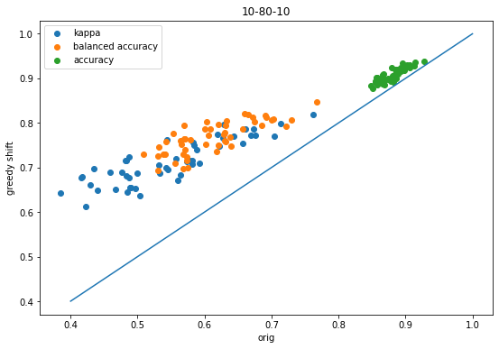
The shift improves all three metrics for every dataset.
Now compare the results for using a grid search based on Cohen’s kappa to the greedy shift results:
scatter([x['shift-kappa'] for x in accum],[x['global-k-shift-kappa'] for x in accum],label='kappa');scatter([x['shift-balanced'] for x in accum],[x['global-k-shift-balanced'] for x in accum],label='balanced accuracy');scatter([x['shift-accuracy'] for x in accum],[x['global-k-shift-accuracy'] for x in accum],label='accuracy');plot([.4,1],[.4,1]);legend();xlabel('greedy shift')ylabel('grid-kappa');title('10-80-10');
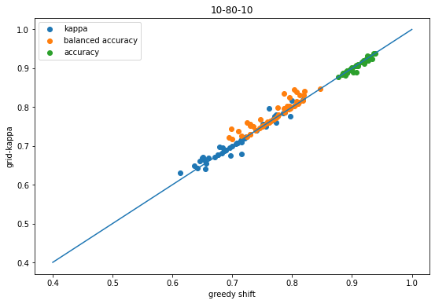
Here the changes are reasonably small, but they do tend to slightly favor the results of the grid search.
Finally, do the equivalent plot comparing the result from using balanced accuracy in the grid search to the results from the greedy shift:
scatter([x['shift-kappa'] for x in accum],[x['global-ba-shift-kappa'] for x in accum],label='kappa');scatter([x['shift-balanced'] for x in accum],[x['global-ba-shift-balanced'] for x in accum],label='balanced accuracy');scatter([x['shift-accuracy'] for x in accum],[x['global-ba-shift-accuracy'] for x in accum],label='accuracy');plot([.4,1],[.4,1]);legend();xlabel('greedy shift')ylabel('grid-balanced');title('10-80-10');
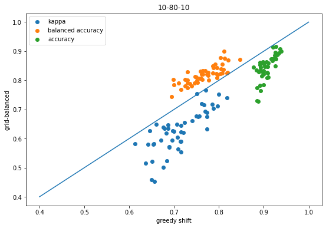
That plot makes it look like doing the threshold shifts using balanced accuracy doesn’t improve kappa, but it’s important to remember that this comparing the balanced accuracy shift vs the kappa shift.
Using balanced accuracy to do the shift instead of kappa does actually help kappa too, as this plot shows:
scatter([x['orig-kappa'] for x in accum],[x['global-ba-shift-kappa'] for x in accum],label='kappa');scatter([x['orig-balanced'] for x in accum],[x['global-ba-shift-balanced'] for x in accum],label='balanced accuracy');scatter([x['orig-accuracy'] for x in accum],[x['global-ba-shift-accuracy'] for x in accum],label='accuracy');plot([.4,1],[.4,1]);legend();xlabel('orig')ylabel('grid-balanced');title('10-80-10');
Still, with these datasets it looks like optimizing the threshold with kappa instead of balanced accuracy is a better idea.
0 is the majority class
Now let’s make sure that the code doesn’t have some “feature” which causes it to only work with the middle class is the majority:
accum_80_10_10 = []for rep inrange(50):print('--------------')# Generate a ternary imbalanced classification problem X, y = make_classification(n_samples=6000, n_features=20, n_informative=10, n_redundant=0, n_classes=3, random_state=0xf00d+rep, shuffle=False, weights = [0.8, 0.1, 0.1]) run_ternary_experiment(X,y,accum_80_10_10)
accum = accum_80_10_10figsize(9,6)scatter([x['orig-kappa'] for x in accum],[x['shift-kappa'] for x in accum],label='kappa');scatter([x['orig-balanced'] for x in accum],[x['shift-balanced'] for x in accum],label='balanced accuracy');scatter([x['orig-accuracy'] for x in accum],[x['shift-accuracy'] for x in accum],label='accuracy');plot([.4,1],[.4,1]);legend();xlabel('orig')ylabel('greedy shift');title('80-10-10');
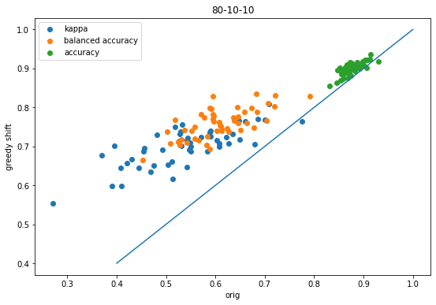
scatter([x['shift-kappa'] for x in accum],[x['global-k-shift-kappa'] for x in accum],label='kappa');scatter([x['shift-balanced'] for x in accum],[x['global-k-shift-balanced'] for x in accum],label='balanced accuracy');scatter([x['shift-accuracy'] for x in accum],[x['global-k-shift-accuracy'] for x in accum],label='accuracy');plot([.4,1],[.4,1]);legend();xlabel('greedy shift')ylabel('grid-kappa');title('80-10-10');
scatter([x['shift-kappa'] for x in accum],[x['global-ba-shift-kappa'] for x in accum],label='kappa');scatter([x['shift-balanced'] for x in accum],[x['global-ba-shift-balanced'] for x in accum],label='balanced accuracy');scatter([x['shift-accuracy'] for x in accum],[x['global-ba-shift-accuracy'] for x in accum],label='accuracy');plot([.4,1],[.4,1]);legend();xlabel('greedy shift')ylabel('grid-balanced');title('80-10-10');
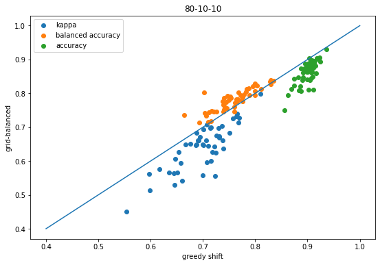
Same conclusions as before (good thing!)
2 is the majority class
accum_10_10_80 = []for rep inrange(50):print('--------------')# Generate a ternary imbalanced classification problem X, y = make_classification(n_samples=6000, n_features=20, n_informative=10, n_redundant=0, n_classes=3, random_state=0xf00d+rep, shuffle=False, weights = [0.1, 0.1, 0.8]) run_ternary_experiment(X,y,accum_10_10_80)
accum = accum_10_10_80figsize(9,6)scatter([x['orig-kappa'] for x in accum],[x['shift-kappa'] for x in accum],label='kappa');scatter([x['orig-balanced'] for x in accum],[x['shift-balanced'] for x in accum],label='balanced accuracy');scatter([x['orig-accuracy'] for x in accum],[x['shift-accuracy'] for x in accum],label='accuracy');plot([.4,1],[.4,1]);legend();xlabel('orig')ylabel('greedy shift');title('10-10-80');
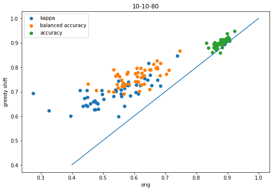
scatter([x['shift-kappa'] for x in accum],[x['global-k-shift-kappa'] for x in accum],label='kappa');scatter([x['shift-balanced'] for x in accum],[x['global-k-shift-balanced'] for x in accum],label='balanced accuracy');scatter([x['shift-accuracy'] for x in accum],[x['global-k-shift-accuracy'] for x in accum],label='accuracy');plot([.4,1],[.4,1]);legend();xlabel('greedy shift')ylabel('grid-kappa');title('10-10-80');
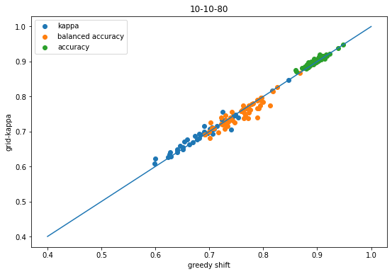
scatter([x['shift-kappa'] for x in accum],[x['global-ba-shift-kappa'] for x in accum],label='kappa');scatter([x['shift-balanced'] for x in accum],[x['global-ba-shift-balanced'] for x in accum],label='balanced accuracy');scatter([x['shift-accuracy'] for x in accum],[x['global-ba-shift-accuracy'] for x in accum],label='accuracy');plot([.4,1],[.4,1]);legend();xlabel('greedy shift')ylabel('grid-balanced');title('10-10-80');
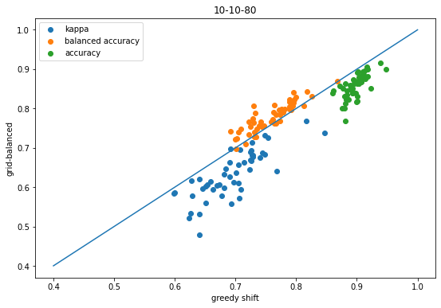
Same conclusions as before (good thing!)
Some ChEMBL datasets
Let’s just be sure that this approach works with bioactivity data too. I don’t think it’s necessary do a comprehensive evaluation here, but I want to show a couple of examples. I didn’t cherry pick these.
CHEMBL205: Carbonic Anhydrase II
data = pd.read_csv('../data/target_CHEMBL205.csv.gz')PandasTools.AddMoleculeColumnToFrame(data,smilesCol='canonical_smiles')data['pKi'] = [-math.log10(x*1e-9) for x in data['standard_value']]data.head()
compound_chembl_id
canonical_smiles
standard_value
standard_units
standard_relation
standard_type
year
ROMol
pKi
0
CHEMBL1054
NS(=O)(=O)c1cc2c(cc1Cl)NC(C(Cl)Cl)NS2(=O)=O
91.0
nM
=
Ki
2009
7.040959
1
CHEMBL1055
NS(=O)(=O)c1cc(C2(O)NC(=O)c3ccccc32)ccc1Cl
138.0
nM
=
Ki
2009
6.860121
2
CHEMBL1060
O=P([O-])([O-])O.[Na+].[Na+]
13200000.0
nM
=
Ki
2004
1.879426
3
CHEMBL106848
NS(=O)(=O)c1ccc(SCCO)cc1
21.0
nM
=
Ki
2013
7.677781
4
CHEMBL107217
CCN(CC)C(=S)[S-].[Na+]
3100.0
nM
=
Ki
2009
5.508638
Pick two pKi values for binning
def binner(act,bins=(5,8.5)):for i,bininenumerate(bins):if act<=bin:return ireturnlen(bins)data['activity'] = [binner(x) for x in data.pKi]data.groupby('activity').describe()
standard_value
year
pKi
count
mean
std
min
25%
50%
75%
max
count
mean
...
75%
max
count
mean
std
min
25%
50%
75%
max
activity
0
968.0
1.242009e+18
3.864224e+19
10000.000
10000.0000
50000.0
196700.000
1.202264e+21
968.0
2012.994835
...
2016.0
2020.0
968.0
4.069107
1.200449
-12.080000
3.706216
4.301030
5.000000
5.00000
1
3582.0
7.292523e+02
1.778519e+03
3.200
13.5000
73.4
417.750
9.900000e+03
3582.0
2013.261307
...
2017.0
2020.0
3582.0
7.050231
0.915651
5.004365
6.379084
7.134306
7.869666
8.49485
2
427.0
1.309327e+00
8.709364e-01
0.008
0.6355
1.0
2.035
3.100000e+00
427.0
2014.962529
...
2017.0
2020.0
427.0
9.050659
0.500779
8.508638
8.691437
9.000000
9.196895
11.09691
3 rows × 24 columns
Ok, that’s imbalanced :-)
Generate fingerprints:
from rdkit.Chem import SaltRemoversr = SaltRemover.SaltRemover()stripped = [sr.StripMol(m) for m in data.ROMol]fpgen = rdFingerprintGenerator.GetMorganGenerator(radius=2)fps = [fpgen.GetFingerprint(m) for m in stripped]
And now run the experiment with 20 random splits:
accum_chembl205 = []for i inrange(20): run_ternary_experiment(fps,data.activity,accum_chembl205,random_state=0xf00d+i)
accum = accum_chembl205figsize(9,6)scatter([x['orig-kappa'] for x in accum],[x['shift-kappa'] for x in accum],label='kappa');scatter([x['orig-balanced'] for x in accum],[x['shift-balanced'] for x in accum],label='balanced accuracy');scatter([x['orig-accuracy'] for x in accum],[x['shift-accuracy'] for x in accum],label='accuracy');plot([.4,1],[.4,1]);legend();xlabel('orig')ylabel('greedy shift');title('CHEMBL205');
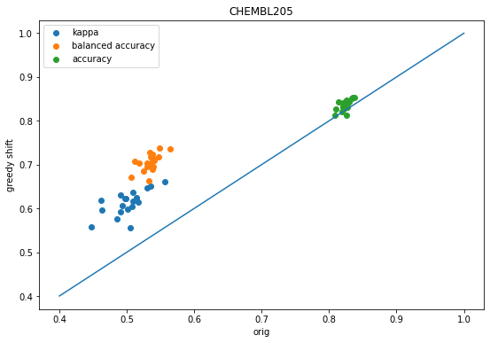
scatter([x['shift-kappa'] for x in accum],[x['global-k-shift-kappa'] for x in accum],label='kappa');scatter([x['shift-balanced'] for x in accum],[x['global-k-shift-balanced'] for x in accum],label='balanced accuracy');scatter([x['shift-accuracy'] for x in accum],[x['global-k-shift-accuracy'] for x in accum],label='accuracy');plot([.4,1],[.4,1]);legend();xlabel('greedy shift')ylabel('grid-kappa');title('CHEMBL205');
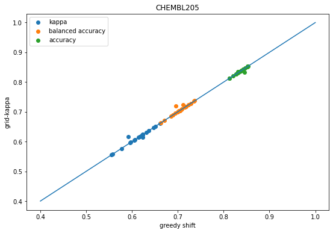
scatter([x['shift-kappa'] for x in accum],[x['global-ba-shift-kappa'] for x in accum],label='kappa');scatter([x['shift-balanced'] for x in accum],[x['global-ba-shift-balanced'] for x in accum],label='balanced accuracy');scatter([x['shift-accuracy'] for x in accum],[x['global-ba-shift-accuracy'] for x in accum],label='accuracy');plot([.4,1],[.4,1]);legend();xlabel('greedy shift')ylabel('grid-balanced');title('CHEMBL205');
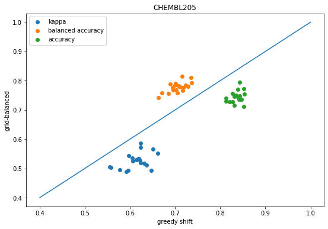
We see the same behavior as before: shifting the descision thresholds using either the greedy approach or grid-based approach improves prediction accuracy over the default decision thresholds.
CHEMBL217: Dopamine D2
data = pd.read_csv('../data/target_CHEMBL217.csv.gz')PandasTools.AddMoleculeColumnToFrame(data,smilesCol='canonical_smiles')data['pKi'] = [-math.log10(x*1e-9) for x in data['standard_value']]def binner(act,bins=(5,8)):for i,bininenumerate(bins):if act<=bin:return ireturnlen(bins)data['activity'] = [binner(x) for x in data.pKi]data.groupby('activity').describe()
standard_value
year
pKi
count
mean
std
min
25%
50%
75%
max
count
mean
...
75%
max
count
mean
std
min
25%
50%
75%
max
activity
0
356.0
143415.189354
781194.668326
10000.000
10000.0000
10000.00
24234.5
10000000.00
356.0
2011.679775
...
2017.0
2019.0
356.0
4.672916
0.581865
2.000000
4.615626
5.000000
5.000000
5.000000
1
4014.0
830.546163
1471.610125
10.000
63.1875
238.51
931.0
9906.00
4014.0
2011.100648
...
2015.0
2020.0
4014.0
6.620074
0.724919
5.004102
6.031050
6.622494
7.199370
8.000000
2
607.0
3.715942
2.786155
0.027
1.2150
3.00
5.9
9.86
607.0
2011.957166
...
2016.0
2019.0
607.0
8.614671
0.475862
8.006123
8.229148
8.522879
8.915457
10.568636
3 rows × 24 columns
from rdkit.Chem import SaltRemoversr = SaltRemover.SaltRemover()stripped = [sr.StripMol(m) for m in data.ROMol]fpgen = rdFingerprintGenerator.GetMorganGenerator(radius=2)fps = [fpgen.GetFingerprint(m) for m in stripped]
accum_chembl217 = []for i inrange(20): run_ternary_experiment(fps,data.activity,accum_chembl217,random_state=0xf00d+i)
accum = accum_chembl217figsize(9,6)scatter([x['orig-kappa'] for x in accum],[x['shift-kappa'] for x in accum],label='kappa');scatter([x['orig-balanced'] for x in accum],[x['shift-balanced'] for x in accum],label='balanced accuracy');scatter([x['orig-accuracy'] for x in accum],[x['shift-accuracy'] for x in accum],label='accuracy');plot([.2,1],[.2,1]);legend();xlabel('orig')ylabel('greedy shift');title('CHEMBL217');
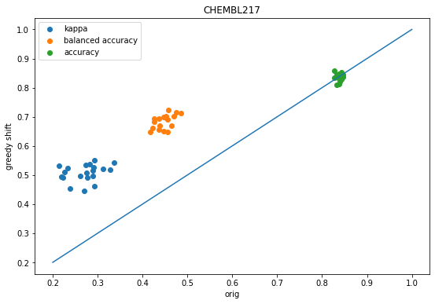
scatter([x['shift-kappa'] for x in accum],[x['global-k-shift-kappa'] for x in accum],label='kappa');scatter([x['shift-balanced'] for x in accum],[x['global-k-shift-balanced'] for x in accum],label='balanced accuracy');scatter([x['shift-accuracy'] for x in accum],[x['global-k-shift-accuracy'] for x in accum],label='accuracy');plot([.4,1],[.4,1]);legend();xlabel('greedy shift')ylabel('grid-kappa');title('CHEMBL217');
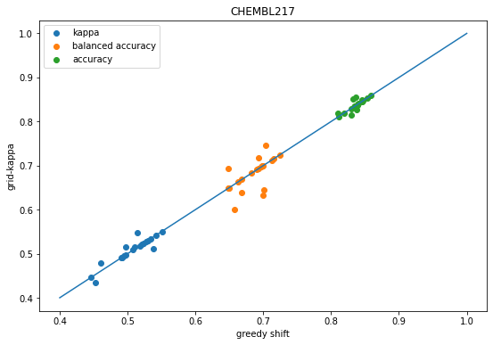
scatter([x['shift-kappa'] for x in accum],[x['global-ba-shift-kappa'] for x in accum],label='kappa');scatter([x['shift-balanced'] for x in accum],[x['global-ba-shift-balanced'] for x in accum],label='balanced accuracy');scatter([x['shift-accuracy'] for x in accum],[x['global-ba-shift-accuracy'] for x in accum],label='accuracy');plot([.4,1],[.4,1]);legend();xlabel('greedy shift')ylabel('grid-balanced');title('CHEMBL217');


![Mol]()
![Mol]()
![Mol]()
![Mol]()
![Mol]()